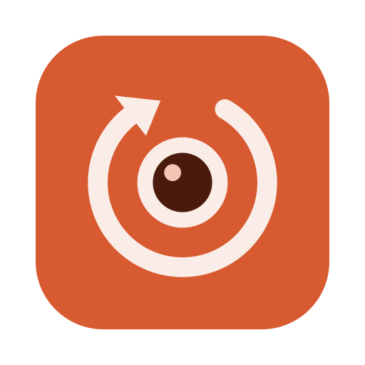

Afterimage
Look present on video calls when you need a moment away.
Free. Requires macOS 14 Sonoma or later.
How it works
- Record a 10-second loop of yourself from the menu bar.
- In Zoom, Google Meet, FaceTime, or any video app, choose Afterimage as your camera.
- Switch between Live and Loop from the menu bar whenever you need to. The call never sees a camera change.
Details
Smooth loops
Your clip plays forward, then backward, so there's no visible jump when it repeats.
Your webcam light stays honest
Afterimage only turns on your real webcam while a video app is using the Afterimage camera.
Nothing leaves your Mac
No accounts, no analytics, no uploads. Your loop is stored on your Mac, and each new recording replaces the last. Privacy policy